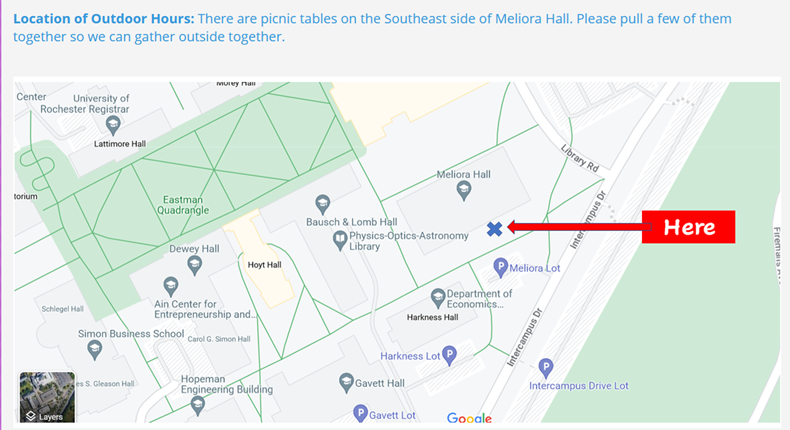

← Back to Office Hours & Student Information
Location of Outdoor Hours: There are picnic tables on the southeast side of Meliora Hall. Please pull a few of them together so we can gather outside together.
